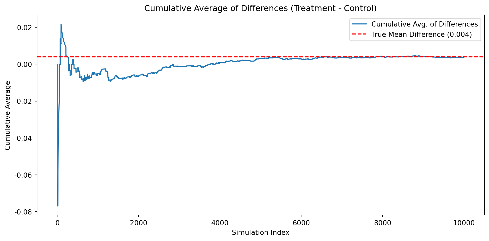
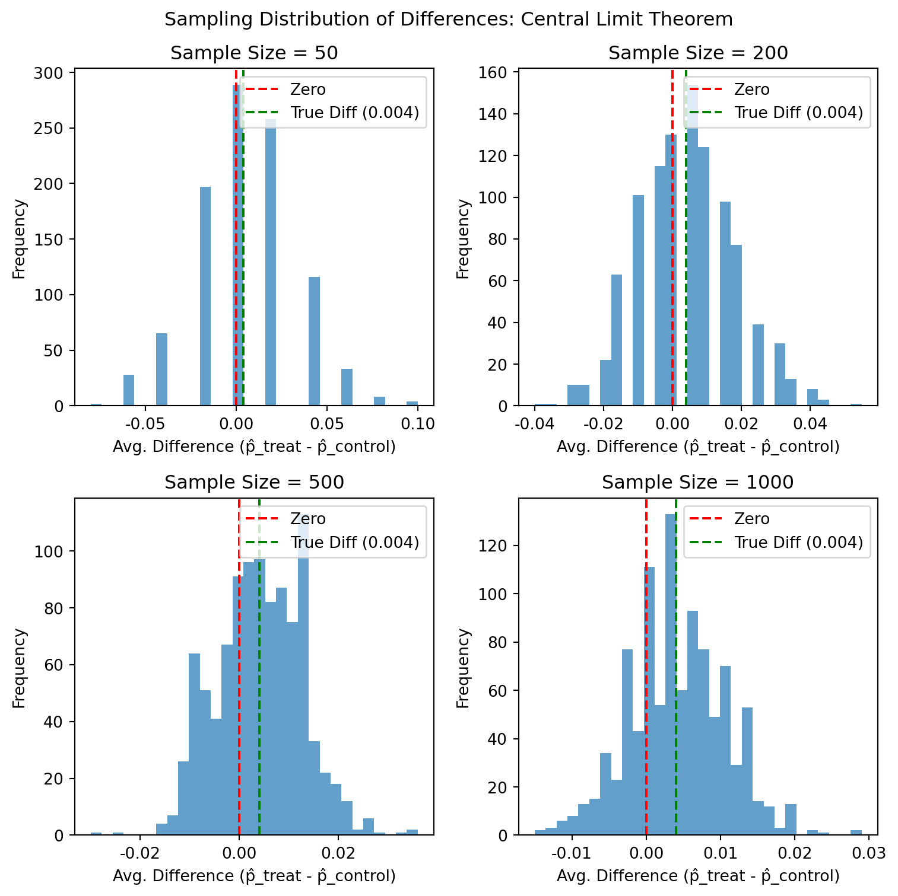

In their 2007 paper published in The American Economic Review, economists Dean Karlan and John List conducted a large-scale natural field experiment to explore the effect of matching grants on charitable giving. The central question they addressed was whether changing the effective price of donating (i.e., increasing the impact of each donated dollar through matches) could influence individual giving behavior.
The study involved over 50,000 previous donors to a politically liberal nonprofit organization in the United States. Each donor received one of several versions of a fundraising letter via direct mail, a standard solicitation method used by the organization. The letters were identical in content—discussing an urgent national political issue—but varied in a few critical ways depending on the assigned experimental treatment.
Participants were randomly assigned to either:
A control group that received a standard letter with no mention of a matching grant, or
A treatment group that was informed of a matching offer funded by an anonymous donor.
Within the treatment group, further randomization occurred along three dimensions:
Match Ratio – Donors were told their contribution would be matched at a rate of 1:1, 2:1, or 3:1.
Maximum Match Size – The total matching fund was framed as being capped at $25,000, $50,000, $100,000, or left unstated.
Suggested Donation Amount – The solicitation letter used a donor-specific “example donation” set to be equal to, 1.25x, or 1.5x the donor’s highest previous contribution.
This design allowed the researchers to isolate not only the average effect of announcing a match but also to examine how donation behavior varied based on the size of the match ratio, the framing of the funding cap, and the suggested donation amount.
The results were both straightforward and surprising:
Announcing the availability of a matching grant increased both response rate and total donations.
However, increasing the match ratio beyond 1:1 did not produce additional gains—suggesting that donors responded to the presence of a match rather than its magnitude.
Interestingly, the effect of the match offer was substantially stronger in red states (those that voted for Bush in 2004), suggesting political environment influences donor sensitivity.
This experiment not only contributed empirical evidence to the economics of charity—specifically the “demand side”—but also served as a real-world test of economic and behavioral theories such as impure altruism, warm-glow giving, and conditional cooperation. The article and supporting data are available from the AEA website and from Innovations for Poverty Action as part of Harvard’s Dataverse.
Data
Description
Variable Definitions
Variable
Description
treatment
Treatment
control
Control
ratio
Match ratio
ratio2
2:1 match ratio
ratio3
3:1 match ratio
size
Match threshold
size25
$25,000 match threshold
size50
$50,000 match threshold
size100
$100,000 match threshold
sizeno
Unstated match threshold
ask
Suggested donation amount
askd1
Suggested donation was highest previous contribution
askd2
Suggested donation was 1.25 x highest previous contribution
askd3
Suggested donation was 1.50 x highest previous contribution
ask1
Highest previous contribution (for suggestion)
ask2
1.25 x highest previous contribution (for suggestion)
ask3
1.50 x highest previous contribution (for suggestion)
amount
Dollars given
gave
Gave anything
amountchange
Change in amount given
hpa
Highest previous contribution
ltmedmra
Small prior donor: last gift was less than median $35
freq
Number of prior donations
years
Number of years since initial donation
year5
At least 5 years since initial donation
mrm2
Number of months since last donation
dormant
Already donated in 2005
female
Female
couple
Couple
state50one
State tag: 1 for one observation of each of 50 states; 0 otherwise
nonlit
Nonlitigation
cases
Court cases from state in 2004-5 in which organization was involved
statecnt
Percent of sample from state
stateresponse
Proportion of sample from the state who gave
stateresponset
Proportion of treated sample from the state who gave
stateresponsec
Proportion of control sample from the state who gave
stateresponsetminc
stateresponset - stateresponsec
perbush
State vote share for Bush
close25
State vote share for Bush between 47.5% and 52.5%
red0
Red state
blue0
Blue state
redcty
Red county
bluecty
Blue county
pwhite
Proportion white within zip code
pblack
Proportion black within zip code
page18_39
Proportion age 18-39 within zip code
ave_hh_sz
Average household size within zip code
median_hhincome
Median household income within zip code
powner
Proportion house owner within zip code
psch_atlstba
Proportion who finished college within zip code
pop_propurban
Proportion of population urban within zip code
Balance Test
As an ad hoc test of the randomization mechanism, I provide a series of tests that compare aspects of the treatment and control groups to assess whether they are statistically significantly different from one another.
Before analyzing the effect of matching grants on donation behavior, we first verify whether the treatment and control groups are balanced on pre-treatment variables, as expected under random assignment. This is an important diagnostic step and is the purpose of Table 1 in the original paper by Karlan & List (2007).
To do this, we test whether certain pre-treatment characteristics are statistically different between groups using both:
A two-sample t-test (per class slide formula)
A linear regression, regressing the variable on the treatment dummy
We show this for two variables:
mrm2: months since last donation
years: years since first donation
Variable 1: mrm2 – Months Since Last Donation
T-Test Formula Used:
\[
t = \frac{\bar{X}_{\text{treat}} - \bar{X}_{\text{control}}}{\sqrt{\frac{s_t^2}{n_t} + \frac{s_c^2}{n_c}}}
\]
Results:
t-statistic: 0.120
p-value: 0.905
Regression coefficient: 0.014
Regression p-value: 0.905
Interpretation:
There is no significant difference in mrm2 between treatment and control. This confirms random assignment worked well for this variable.
# Import librariesimport numpy as npimport statsmodels.api as smimport statsmodels.formula.api as smffrom scipy import statsimport pandas as pddf = pd.read_stata("karlan_list_2007.dta")# Clean data: drop rows with missing 'mrm2'df_clean = df[["treatment", "mrm2"]].dropna()# Split into treatment and control groupsgroup_t = df_clean[df_clean["treatment"] ==1]["mrm2"]group_c = df_clean[df_clean["treatment"] ==0]["mrm2"]# Compute group statsx1, x2 = group_t.mean(), group_c.mean()s1, s2 = group_t.std(ddof=1), group_c.std(ddof=1)n1, n2 = group_t.count(), group_c.count()# Calculate standard error and t-stat using the class formulase = np.sqrt((s1**2/ n1) + (s2**2/ n2))t_stat = (x1 - x2) / se# Degrees of freedom using Welch–Satterthwaite approximationdf_denom = ((s1**2/ n1 + s2**2/ n2) **2) / (((s1**2/ n1) **2) / (n1 -1) + ((s2**2/ n2) **2) / (n2 -1))# Two-tailed p-valuep_val_ttest =2* (1- stats.t.cdf(np.abs(t_stat), df_denom))print("T-test result")print(f" t-statistic: {t_stat:.3f}")print(f" p-value: {p_val_ttest:.3f}")
T-test result
t-statistic: 0.120
p-value: 0.905
# Now perform the equivalent linear regressionmodel = smf.ols("mrm2 ~ treatment", data=df_clean).fit()print("Linear regression result")print(model.summary().tables[1])
Linear regression result
==============================================================================
coef std err t P>|t| [0.025 0.975]
------------------------------------------------------------------------------
Intercept 12.9981 0.094 138.979 0.000 12.815 13.181
treatment 0.0137 0.115 0.119 0.905 -0.211 0.238
==============================================================================
Variable 2: years – Years Since First Donation
Results:
t-statistic: –1.091
p-value: 0.275
Regression coefficient: –0.058
Regression p-value: 0.270
Interpretation:
No statistically significant difference here either. This supports the claim that treatment was randomized effectively.
model = smf.ols("female ~ treatment", data=df_clean3).fit()model.summary()
OLS Regression Results
Dep. Variable:
female
R-squared:
0.000
Model:
OLS
Adj. R-squared:
0.000
Method:
Least Squares
F-statistic:
3.092
Date:
Wed, 23 Apr 2025
Prob (F-statistic):
0.0787
Time:
21:02:39
Log-Likelihood:
-30148.
No. Observations:
48972
AIC:
6.030e+04
Df Residuals:
48970
BIC:
6.032e+04
Df Model:
1
Covariance Type:
nonrobust
coef
std err
t
P>|t|
[0.025
0.975]
Intercept
0.2827
0.004
80.688
0.000
0.276
0.290
treatment
-0.0075
0.004
-1.758
0.079
-0.016
0.001
Omnibus:
17873.494
Durbin-Watson:
2.004
Prob(Omnibus):
0.000
Jarque-Bera (JB):
10142.985
Skew:
0.993
Prob(JB):
0.00
Kurtosis:
1.986
Cond. No.
3.22
Notes: [1] Standard Errors assume that the covariance matrix of the errors is correctly specified.
Conclusion
Table 1 in Karlan & List (2007) exists to show that randomization created balance between the treatment and control groups. Our replication confirms that conclusion for mrm2, years, and female — giving us confidence that observed differences in donation behavior are not driven by pre-existing differences between groups.
Experimental Results
Charitable Contribution Made
First, I analyze whether matched donations lead to an increased response rate of making a donation.
Barplot: Donation Rates by Group
The plot shows a higher donation rate in the treatment group compared to the control group. This supports the hypothesis that mentioning a matching grant increases the likelihood of donation.
T-Test Results
Using the class slide formula:
\[
t = \frac{\bar{X}_{\text{treat}} - \bar{X}_{\text{control}}}{\sqrt{\frac{s_t^2}{n_t} + \frac{s_c^2}{n_c}}}
\]
t-statistic: 3.209
p-value: 0.0013
This tells us that the treatment and control groups differ meaningfully in donation behavior.
Bivariate Linear Regression
We regress gave (binary donation indicator) on treatment:
Treatment coefficient: 0.00418
p-value: 0.0019
This means that being in the treatment group increased the donation rate by 0.4 percentage points — a nearly 22% increase over the baseline control group donation rate of ~1.8%.
Optimization terminated successfully.
Current function value: 0.100443
Iterations 7
Probit Regression Results
Dep. Variable:
gave
No. Observations:
50083
Model:
Probit
Df Residuals:
50081
Method:
MLE
Df Model:
1
Date:
Wed, 23 Apr 2025
Pseudo R-squ.:
0.0009783
Time:
21:02:39
Log-Likelihood:
-5030.5
converged:
True
LL-Null:
-5035.4
Covariance Type:
nonrobust
LLR p-value:
0.001696
coef
std err
z
P>|z|
[0.025
0.975]
Intercept
-2.1001
0.023
-90.073
0.000
-2.146
-2.054
treatment
0.0868
0.028
3.113
0.002
0.032
0.141
Coefficient on treatment: 0.0868
p-value: 0.0019
This matches the result in Table 3, Column 1 of the paper. A positive coefficient in the probit model reinforces the same conclusion: people respond positively to the presence of a matching grant.
Interpretation
These results show that just knowing a donation will be matched makes people more likely to give. This supports theories in behavioral economics like impure altruism or “warm-glow giving” — where people care not just about helping, but about feeling effective when doing so.
The findings also reinforce why framing and context matter in fundraising. Small interventions like matching grants can produce significant shifts in behavior.
Differences between Match Rates
Next, I assess the effectiveness of different sizes of matched donations on the response rate.
We conduct two pairwise t-tests:
2:1 vs 1:1
Response Rate (2:1): 2.26%
Response Rate (1:1): 2.07%
Difference: 0.19 percentage points
3:1 vs 2:1
Response Rate (3:1): 2.27%
Response Rate (2:1): 2.26%
Difference: ~0.01 percentage points
These results support what the authors of the paper describe: “figures suggest that larger match ratios do not substantially alter behavior.” The differences are numerically small and, as we’ll see below, not statistically significant.
Regression: gave ~ ratio2 + ratio3
We use 1:1 as the baseline and include indicator variables for 2:1 and 3:1 matches.
Notes: [1] Standard Errors assume that the covariance matrix of the errors is correctly specified.
Interpretation:
The coefficient estimates are consistent with the direct differences in donation rates.
However, these increases are very small in absolute terms and not statistically significant (p-values > 0.05).
This again supports the paper’s main claim: offering a match increases giving, but increasing the match ratio beyond $1:$1 does not lead to meaningful gains.
Summary Table
Match Ratio
Donation Rate
Difference (vs prior)
1:1
2.07%
—
2:1
2.26%
+0.19 pp
3:1
2.27%
+0.01 pp
Behavioral Insight
These results suggest that the presence of a match, not its size, is what matters. Donors may interpret any match as a social signal or incentive to act, but they don’t seem to value a 3x match more than a 1x match.
This is consistent with behavioral theories like: - Warm-glow giving - Saturation effects in motivation - Signaling models of generosity
Size of Charitable Contribution
In this subsection, I analyze the effect of the size of matched donation on the size of the charitable contribution.
We first run a regression on the full sample, including both donors and non-donors:
This result suggests that people in the treatment group gave 15 cents more on average than those in the control group. It is marginally statistically significant at the 10% level, but not at 5%. So, while the match offer might increase total revenue slightly, the effect is modest.
We now repeat the analysis using only donors (those with amount > 0):
Once we condition on having donated, there is no significant difference in how much people in the treatment vs. control groups gave. In fact, the point estimate is negative — donors in the treatment group gave slightly less, but this difference is small and statistically insignificant.
Interpretation
The first regression (full sample) has a causal interpretation due to random assignment. It tells us the effect of treatment on average giving across everyone.
The second regression (among donors) does not have a clear causal interpretation — the group of people who chose to donate may differ between treatment and control.
The following plots show the distribution of donation amounts among people who gave, separated by group. A red dashed line marks the average in each group.
These plots show that:
The donation distribution is heavily right-skewed in both groups.
The mean is slightly higher in the control group, supporting the regression result among donors.
Conclusion
Offering a match increases the likelihood that someone gives, but does not meaningfully affect the size of the donation among those who already chose to give.
This aligns with theories of warm-glow giving and threshold effects — people may be triggered to act, but their internal sense of how much to give remains stable.
Simulation Experiment
As a reminder of how the t-statistic “works,” in this section I use simulation to demonstrate the Law of Large Numbers and the Central Limit Theorem.
Suppose the true distribution of respondents who do not get a charitable donation match is Bernoulli with probability p=0.018 that a donation is made.
Further suppose that the true distribution of respondents who do get a charitable donation match of any size is Bernoulli with probability p=0.022 that a donation is made.
Law of Large Numbers
We assume:
The control group follows a Bernoulli distribution with \(p = 0.018\)
The treatment group follows a Bernoulli distribution with \(p = 0.022\)
The true difference in donation rates is therefore \(0.022 - 0.018 = 0.004\).
Simulation Setup
We simulate:
100,000 donation responses from the control distribution.
10,000 donation responses from the treatment distribution.
From these, we compute a vector of 10,000 differences in donation outcomes between treatment and randomly sampled control units.
We then plot the cumulative average of those 10,000 differences.
import numpy as npimport matplotlib.pyplot as plt# Set seed for reproducibilitynp.random.seed(42)# True probabilitiesp_control =0.018p_treatment =0.022# Simulation sizesn_control =100000n_treatment =10000# Simulate donation outcomessim_control = np.random.binomial(1, p_control, n_control)sim_treatment = np.random.binomial(1, p_treatment, n_treatment)# Random sample from control to match treatment sizesim_control_sampled = np.random.choice(sim_control, size=n_treatment, replace=False)# Calculate differences and cumulative averagediffs = sim_treatment - sim_control_sampledcumulative_avg = np.cumsum(diffs) / np.arange(1, n_treatment +1)# Plotplt.figure(figsize=(10, 5))plt.plot(cumulative_avg, label="Cumulative Avg. of Differences")plt.axhline(p_treatment - p_control, color='red', linestyle='--', label='True Mean Difference (0.004)')plt.title("Cumulative Average of Differences (Treatment - Control)")plt.xlabel("Simulation Index")plt.ylabel("Cumulative Average")plt.legend()plt.tight_layout()plt.show()

Interpretation
The blue line shows the cumulative average difference between simulated treatment and control groups. As more simulations accumulate, the cumulative average converges to the true difference of 0.004, shown with a red dashed line.
This visually demonstrates the Law of Large Numbers — as sample size grows, the sample average converges to the true population mean.
Central Limit Theorem
To demonstrate the Central Limit Theorem (CLT), we simulate repeated sampling from control and treatment groups with known probabilities of donation:
We draw samples of size 50, 200, 500, and 1000, and repeat each sampling process 1,000 times. For each repetition, we calculate the average difference in donation rate between treatment and control samples.
import matplotlib.pyplot as pltfig, axs = plt.subplots(2, 2, figsize=(8, 8))axs = axs.flatten()for i, n inenumerate(sample_sizes): axs[i].hist(diff_distributions[n], bins=30, alpha=0.7) axs[i].axvline(0, color='red', linestyle='--', label="Zero") axs[i].axvline(0.004, color='green', linestyle='--', label="True Diff (0.004)") axs[i].set_title(f"Sample Size = {n}") axs[i].set_xlabel("Avg. Difference (p̂_treat - p̂_control)") axs[i].set_ylabel("Frequency") axs[i].legend()plt.suptitle("Sampling Distribution of Differences: Central Limit Theorem")plt.tight_layout()plt.show()

Interpretation
Each histogram shows the distribution of 1,000 simulated average differences between treatment and control outcomes at different sample sizes.
When \(n = 50\), the distribution is noisy and spread out, with zero not obviously in the center.
As sample size increases, the distribution becomes more normal-shaped and tightly centered around the true difference of 0.004.
By \(n = 1000\), the sampling distribution is narrow and well-separated from zero, showing how larger sample sizes improve precision.
This is the Central Limit Theorem in action: the average of many independent samples approximates a normal distribution, even when the underlying variable (donation or not) is binary.